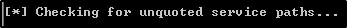

Escalation via Unquoted Service Paths
Unquoted Service Paths is for path that have a space within but are not quoted:
this will proc some issues
In PowerUp, we can see some examples:

Because that path is unquoted, Windows will look for elements to run like:
C:\Program, C:\Program File\Unquoted etc.
For the attack, we are going to insert a file called
Common
into
C:\Program Files\Unquoted Path Service\
To get started, we need to run a MSFVenom/Metasploit combo:
Pass the file with Python/Web Browser combo, and save it into
C:\Program Files\Unquoted Path Service\
Now, if we start the unquotedsvc, we should get a shell back!!
We got a
NT AUTHORITY\SYSTEM
because the path is run as Administrator